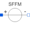

V_sffmSingle-frequency FM voltage source |

|
Information
This information is part of the Modelica Standard Library maintained by the Modelica Association.
The single-frequency frequency modulation source generates a carrier signal of the frequency FC. This signal is modulated by the signal frequency FS. See the formula in the Modelica text.
Attention:
- All parameters of sources should be set explicitly.
- since TSTEP and TSTOP are not available for modeling in Modelica, differences to SPICE may occur if not all parameters are set.
Parameters (5)
Connectors (2)
| p |
Type: PositivePin Description: Positive electrical pin |
|
|---|---|---|
| n |
Type: NegativePin Description: Negative electrical pin |